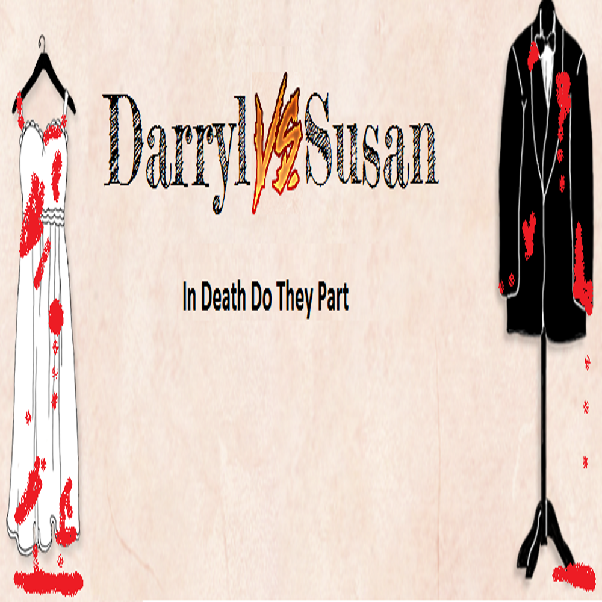

-
 Book Sales Project
Book Sales Project -
 Darryl and Susan's Wedding
Darryl and Susan's Wedding -

Darryl VS Susan: In Death Do They Part!
My name is Todd Raymond and I am currently enrolled in the Computer Programmer program at Georgian College in Barrie, Ontario.
On this site you will find projects I am currently working on as well as ones that I have completed. Please take the time to look around!
While growing up, I, much like any other child, loved to play video games. As time progressed I found that games became easier and seemingly less original. At first I dismissed this,
thinking that it was a natural progression of my growing talent for games. A time came when I realized that perhaps there was more to it, that maybe there was room for change in the gaming
industry, that if there were changes to be made I would endeavor to find them and be a part of this new era of gaming.
I have always felt that the AI was too predictable in video games. When I decided to get into programming I was not 100% sure what my end goal would be. After studying for a time at school and
really thinking about what I want to do, I have realized that I want to create more robust AI systems. AI systems that do not feel robotic but instead feel organic, fluid....Alive...
Technology is moving forward with incredible speed. With all the new technologies available and those that are at the cusp of our understanding, I believe that video games are about to take the next
step in their evolution and I intend to be apart of this.